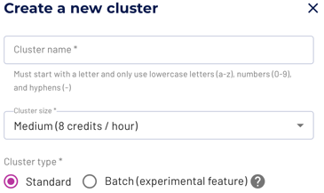

Starting in the first week of May, Starburst Galaxy includes two exciting new features:
These features greatly expand the supported use cases for Starburst Galaxy, and bring new performance benefits to everyone.
Beyond Hive with Delta Lake or Iceberg
Great Lakes connectivity abstracts the details of using different table formats and file types when using certain write access statements for object storage systems. This connectivity is built into Starburst Galaxy, and is available to all users.
You can now use any of the following object storage catalogs with the modern table formats Delta Lake and Iceberg.
This allows you to seamlessly migrate from the legacy Hive system to Iceberg or Delta Lake. You can migrate all from within Starburst Galaxy, one table at the time if desired. Once you are using Iceberg or Delta Lake, all the advantages of these modern systems are available, such as improved performance, snapshots, and more. At the same time, you can query all tables in your queries just as before.
Great Lakes connectivity lets you configure the table format with a single
type parameter for CREATE TABLE or CREATE TABLE AS statements. Find out
more details for the different formats in the documentation:


For example, use a CREATE TABLE statement like the following to specify using
the Iceberg table format and the Apache Parquet file format:
CREATE TABLE customer (
name varchar,
address, varchar)
WITH (
type='iceberg',
format='parquet');
Batch and ETL processing for everyone
In an ideal world, analytics is instant and data is clean and consistent at the source. In the real world however the amount of data you deal with every day is huge. The data is distributed, includes inconsistencies, and running any analytics can take a long time. That is why Extract, Transform, Load (ETL) processes are still important. Processing these long-running queries is often a critical process and failures have to be avoided.
With the new batch mode for Starburst Galaxy clusters, you now get access to a very convenient way to activate fault-tolerant query execution using a simple cluster type selection.

With batch mode enabled, all queries on the cluster benefit from fault-tolerant execution. Problems such as network issues accessing the source data, memory overflows, or even partial cluster outages no longer cause the query to fail. Even parts of a query can be reprocessed as necessary.
With this feature enabled on your cluster, usage of tools such as dbt can become a regular occurrence. This allows you to automate further parts of your analytics pipeline. With Starburst Galaxy you don’t have to worry about managing the infrastructure or operating the clusters, and your query processing can be automated as well. You can spend more time on understanding the data, such as with the help of the built-in query editor.
Try it out. You are going to love it! And keep an eye on the release notes for Starburst Galaxy, because more great features are on the way.
Barton and Manfred